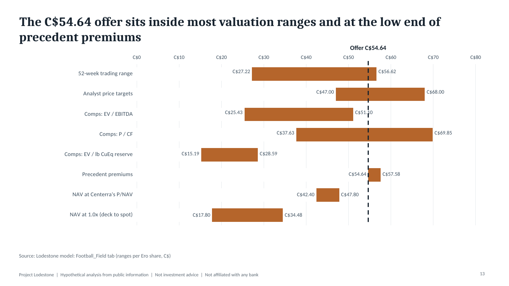
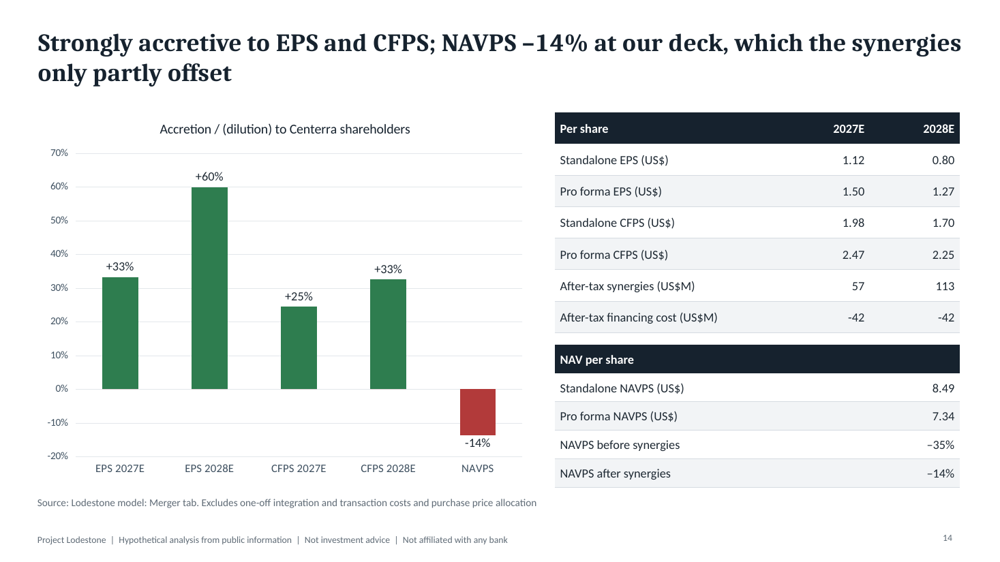
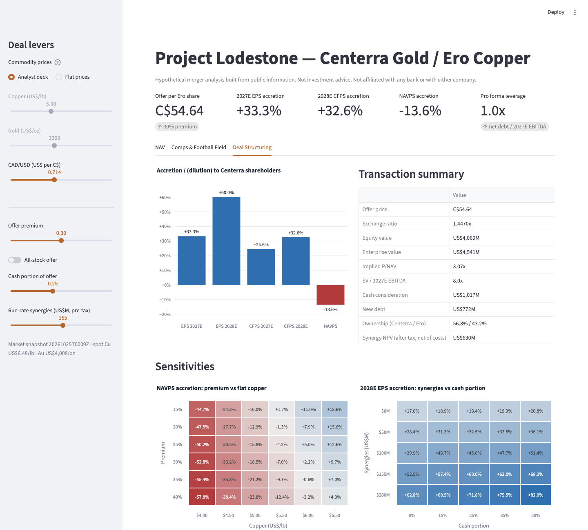

Hypothetical pitch · public information only · not investment advice · not affiliated with any bank
Project Lodestone
A buy-side recommendation that Centerra Gold acquire Ero Copper at C$54.64 per share, creating an Americas-weighted copper-gold mid-tier. Built like a live mandate: every number traces to a filing or a market data pull, and every assumption sits in one CSV.
C$54.64Offer per Ero share, 30% premium
+33%2027E EPS accretion
+33%2028E CFPS accretion
−14%NAVPS at the analyst deck
US$155MRun-rate synergies
Open the work
Pitch book (PDF)22 pages: thesis, valuation, accretion, risks
Excel modelSix asset NAVs, comps, precedents, merger model
Live dashboardFlex copper, gold, FX, premium and mix
Source codeData pipeline, valuation engine, tests
The thesis
- Balance sheet room. Centerra's net cash funds the 25% cash portion and absorbs Ero's notes; pro forma leverage is 1.0x 2027E EBITDA.
- Complementary metal mix. Centerra is gold-heavy and its copper is partly streamed; Ero adds two unstreamed Brazilian copper mines.
- Mine life and jurisdiction. Ero's copper replaces Öksüt's cash flow as it runs out, and dilutes Centerra's Türkiye exposure.
- The honest cost. At our below-spot deck the deal is −14% to NAV per share; it breaks even on NAV as copper approaches spot (US$6.48/lb). Both stocks trade at similar P/NAV (2.38x and 2.36x), so the premium is what synergies must pay for.



How it is built
- Data pipeline:
scripts/fetch_market_data.pypulls prices, shares, balance sheets, CAD/USD and COMEX copper and gold through yfinance into timestamped CSVs. - Model: generated from CSVs with live formulas; the copper sensitivity is produced by re-running the workbook under each price case.
- Reconciliation: a Python engine mirrors the NAV and merger math and a test suite checks it against Excel within 0.5%.
- Deck: every chart and figure is read from the recalculated model; nothing is typed by hand.